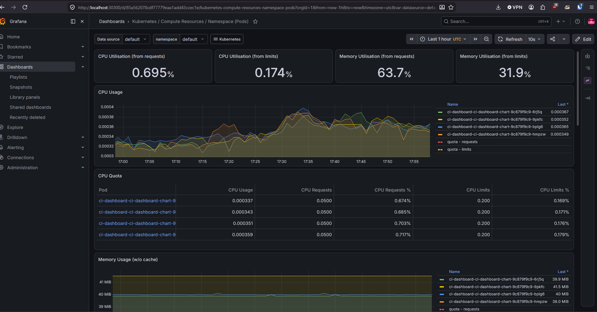
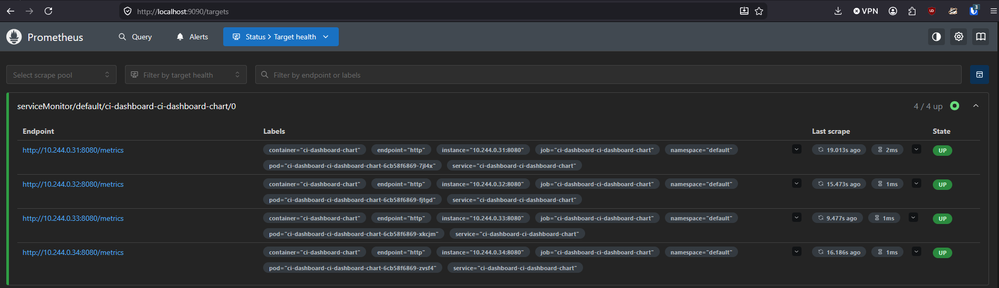

write-up
Building a local GitOps pipeline from zero Kubernetes knowledge
kind > Helm > ArgoCD > Prometheus/Grafana, wrapped around an existing
Flask side project. Includes the part where a bad git push
briefly broke a live Lambda function.
why
I already had a small Flask dashboard (aggregates GitHub Actions status across a couple of repos) running serverlessly on Lambda. Rather than touch a working deployment, I built a second, Kubernetes-based path for the same app as a learning project - the goal was a real local GitOps loop, not a tutorial copy-paste.
the pipeline
What actually happens on a deploy
git push ci-dashboard-k8s
> GitHub Actions: test, build image, push to private ECR
> checkout ci-dashboard-chart, bump values.yaml image.tag to commit SHA, commit, push
> ArgoCD polls the chart repo, detects the change, runs Helm
> new pods roll out; old pods retired only once new ones are healthy
> Prometheus scrapes /metrics via a ServiceMonitor; Grafana visualizes it
stack
Why each piece
kind
A real Kubernetes cluster running as Docker containers, for local
dev. kubectl is just the client - kind
is what actually builds the cluster it talks to.
Helm
Templated the Deployment/Service so environment-specific values
(image tag, replicas, ports) live in one values.yaml
instead of hand-copied YAML files - same problem I'd already solved
once at work with a Jenkins shared library, just for manifests.
ArgoCD
The actual GitOps part. A controller inside the cluster watches
Git and reconciles the cluster to match it, instead of me running
helm upgrade by hand.
Prometheus + Grafana
Infra metrics (CPU/memory per pod) came free with zero app
changes. App metrics needed instrumenting Flask with
prometheus-flask-exporter and a ServiceMonitor.
proof
Self-healing, verified live
Two tests, not just a demo claim:
- Manual drift: scaled the deployment down by hand with
kubectl scale- ArgoCD reverted it within seconds (selfHeal: true). - Git as source of truth: changed
replicaCountinvalues.yaml, committed, pushed - zerokubectl/helmcommands run - new pod appeared within ArgoCD's ~3 min poll interval.
observability
Metrics that actually mean something
Infra dashboards came bundled with kube-prometheus-stack -
real per-pod CPU/memory, zero app changes:

App-level metrics needed real instrumentation - prometheus-flask-exporter
exposing /metrics, and a ServiceMonitor so
Prometheus actually discovers it:

the incident
Ten minutes of broken production
Splitting the Kubernetes version into its own repo went wrong in an
avoidable way: the local folder I ran git init in was
already a clone with origin pointed at the
original Lambda repo. I renamed a branch, pushed, and
the gunicorn-based code - which has no lambda_handler -
landed straight on that repo's main, which has a working
GitHub Actions workflow that deploys to Lambda on every push.
1. Bad push lands on the Lambda repo's main
2. Deploy workflow fires, updates the live Lambda function
3. Workflow's own health-check step fails: curl > 503
4. Caught within minutes via the failing CI step, not a user report
5. git revert, re-deployed, confirmed via the same health check
Root cause: never ran git remote -v before assuming a
folder was a fresh, unconnected repo. That's now a checked step before
any first push, permanently.
gotcha
Private registries don't work the way you'd hope
Everything worked fine right up until the pipeline pushed to a
private ECR repo instead of loading images straight
into kind's local store. Kubernetes needs an explicit
imagePullSecret to authenticate - and that secret is
built from a short-lived AWS token (~12h), not a permanent credential.
Rather than refresh it by hand forever, I wrote a small in-cluster
CronJob with its own minimal-permission IAM user to refresh it every
6 hours - a good excuse to actually learn Kubernetes RBAC
(ServiceAccount + Role + RoleBinding) instead of copy-pasting a secret
command.
takeaways
What I'd tell someone starting the same thing
kubectl describe podandkubectl logsbefore anything else - nearly every failure here was explainable from one of those two.- Test the container locally with plain
docker runbefore it touches Kubernetes at all. Every image-level bug is faster to catch there than through a full CI > ECR > ArgoCD round trip. helm templatebeforehelm install/upgrade- a free dry-run that catches YAML indentation mistakes before they hit a real cluster.- Check
git remote -vbefore the first push in any "new" local repo. Obvious in hindsight.